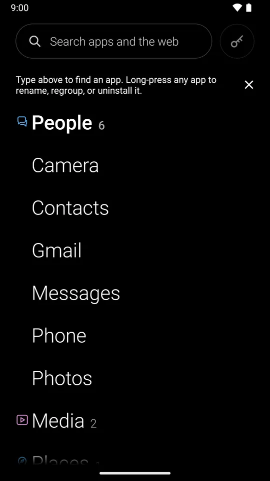
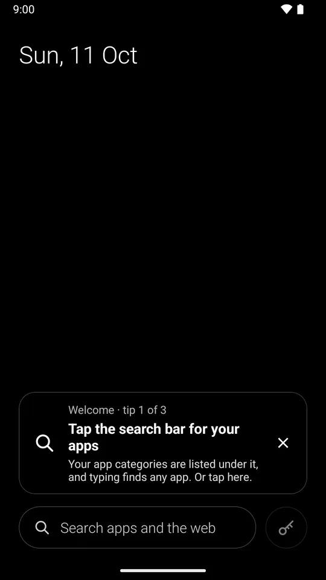
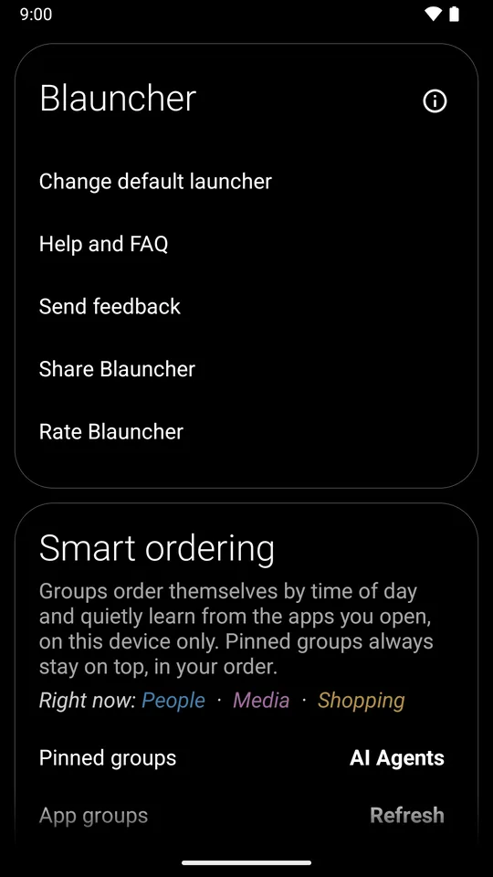

Blauncher
A minimal, gesture-driven Android launcher that gets out of the way. A black screen, the date, one search bar for your apps and the web, and a key to your passwords. No app icons, no dock, no widgets.
Free and open source · Android 15 or newer · no internet permission
Screens
Almost nothing, on purpose.
Tap the search bar for your apps. Long-press for settings. That is the whole interface, and a small tip card teaches it on first run, one gesture at a time.
HomeThe date, a search bar, a key. 
Your appsCategories, sorted on the device. 
First runOne tip at a time, then gone. 
SettingsA long-press away.
What it does
Open a category.
This list works like the drawer: tap a category to see what is in it, and opening another closes the last.
Home 4
- Almost nothing on it. The date up top; along the bottom, a search bar and a shortcut button. The middle of the screen is empty on purpose.
- The date opens your calendar; hold it to pick another app, and place it left, centre or right.
- The shortcut button finds your password manager on its own (Bitwarden, 1Password, Proton Pass, KeePassDX and others) and wears a key. Point it at any app and pick from some thirty line-art glyphs.
- Swipe up, left or right for three apps of your choice (the first swipe each way asks which), and down for notifications.
Search 3
- One search for apps and the web. Tap the bar and it rides up to the top of the screen with the keyboard, your app categories below it.
- One rule: an app opens only when you tap it, and Enter always searches the web. Type a few letters and the matching apps come up, best match first.
- Your engine, your browser. divid3 by default, or DuckDuckGo, Google, Bing, Brave, Kagi, Startpage, Ecosia, Perplexity or ChatGPT, in your default browser; or let the browser pick.
Categories 3
- Your apps, as a short list. Agents, People, Focus, News, Media, Tools and more, sorted on the device, each with a small coloured glyph and its app count.
- Tap one to list its apps; opening another closes it, so the list always fits above the keyboard.
- Long-press an app to rename it, uninstall it, or set its categories, several at once if you like.
Through the day 3
- An order that follows your day. News in the morning, focus during work, media in the evening, sleep and meditation from about 8:30 pm.
- It sharpens from the apps you actually open, and inside each group the ones you open most come first. Learning fades after a couple of weeks.
- Pin any groups to the top (Agents is pinned by default), or reset the learning any time.
Every screen 3
- Phones, tablets, foldables and Chromebooks. Phones stay in portrait; larger screens rotate freely and keep your place.
- Keyboard and mouse: the wheel, the up arrow or Enter opens the apps, a letter key starts a search with it, and right-click opens Settings.
- TalkBack gets every gesture as an action, and back is predictive everywhere but Home.
Gestures
The whole interface.
There are no visible buttons to learn. Everything is a gesture or a tap on text, and Settings › Help and FAQ lists every one of them on one page.
- Tap the search barYour apps, with the keyboard up
- Long-press empty spaceSettings, the one to remember
- Tap the dateYour calendar
- Tap the keyYour password manager, or any app
- Swipe downNotifications, or search
- Swipe upAn app you choose
- Swipe leftAn app you choose
- Swipe rightAn app you choose
Privacy
Private by construction.
Not a setting, not a promise: Blauncher simply cannot do these things, because it never asks Android for the permission.
- No internet permissionNothing leaves the phone. Web searches are handed to your browser.
- No list of every appNo
QUERY_ALL_PACKAGES; it sees only the apps a launcher needs to show. - No usage statsSmart ordering learns only from launches made inside the launcher.
- No backupsWhat it learns stays in local preferences, excluded from backups and device transfer.
- No accounts, sync or analyticsNo ads, no tracking, no in-app purchases.
- No accessibility serviceAnd no launcher-managed wallpaper. Private Space stays behind a tap to unlock.
Install
Three steps.
- Download Blauncher.apk from the latest release. Every build comes straight from GitHub Actions on
main. - Optionally verify it against
Blauncher.apk.sha256from the same release, or check its build provenance:sha256sum -c Blauncher.apk.sha256 gh attestation verify Blauncher.apk --repo bradflaugher/Blauncher - Install it, open it, and tap Set as default launcher. To go back, pick your old launcher in Settings › Change default launcher.
Requires Android 15 or newer. Blauncher is in closed testing on Google Play; until it is public there, the GitHub release is the way in.
More